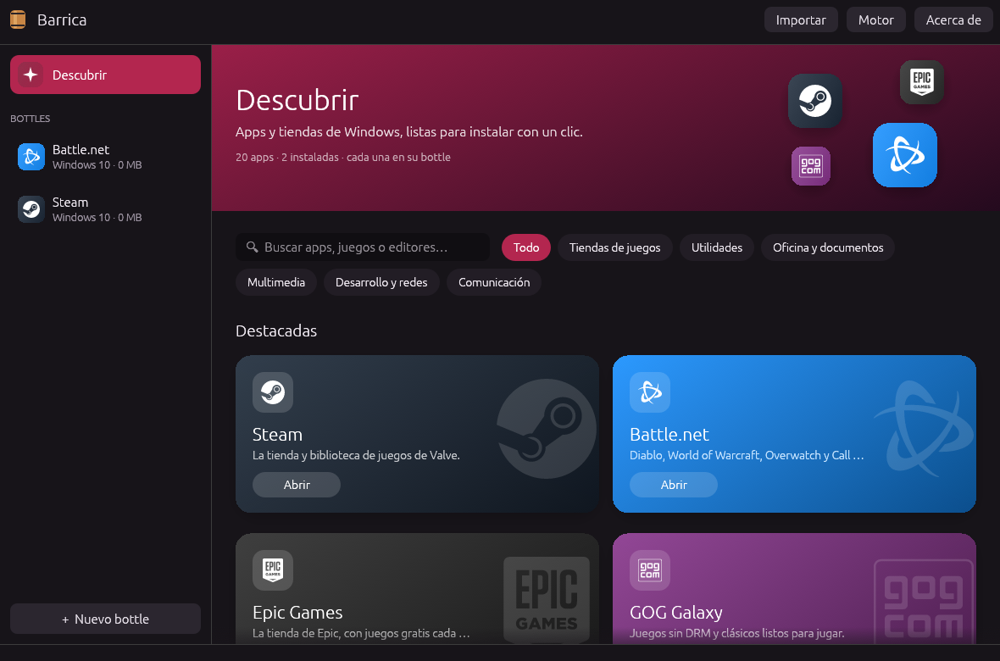
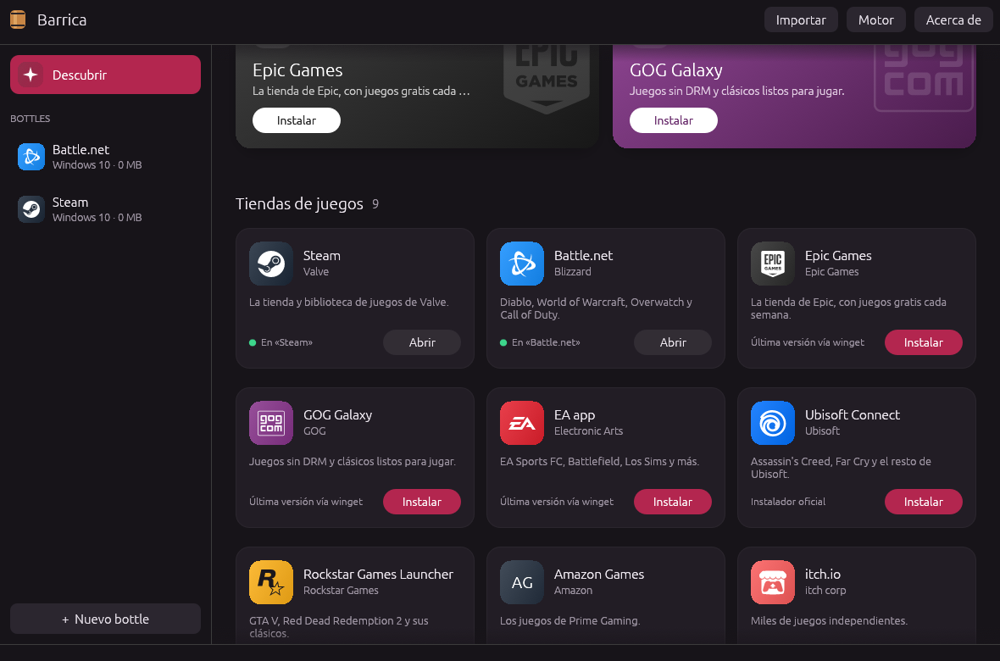
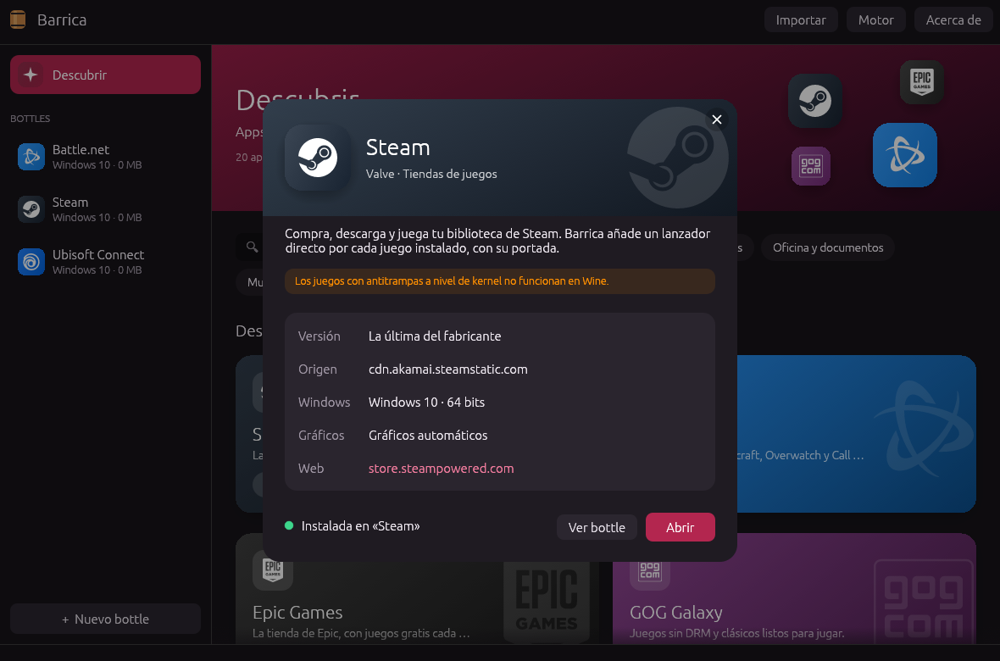
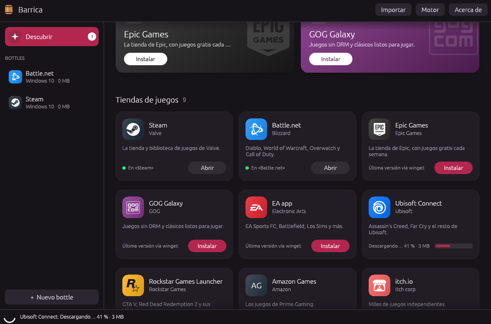
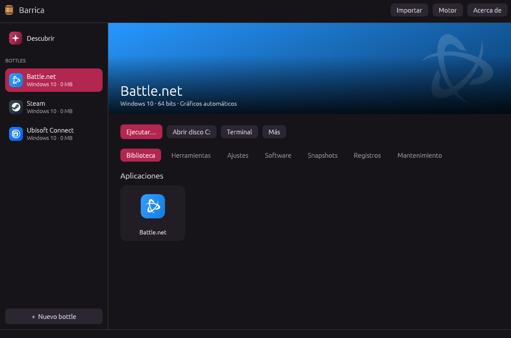

Juegos y apps de Windows en tu Mac, sin complicaciones.
Barrica instala y abre programas de Windows en macOS con su propio motor basado en Wine. Libre, gratis y hecha para jugar.
macOS 11 o superior · Apple Silicon (e Intel, con límites) · Software libre, licencia GPL-3.0

Todo lo que necesitas para jugar
Un «bottle» es un Windows aparte, solo para una app. Barrica los crea, los prepara y los cuida por ti.
Descubrir
Steam, Battle.net, Epic, GOG, EA app, 7-Zip, Notepad++ y más, con un clic. El catálogo y las versiones se actualizan solos.
Motor propio
Wine 11 compilado desde el código libre de CrossOver 26.3, con MSync, DXMT y MoltenVK. Viene dentro de la app.
DirectX sobre Metal
Elige capa por bottle: DXMT para DirectX 11, D3DMetal de Apple para DirectX 12, o WineD3D. «Automático» decide por ti.
Snapshots instantáneos
Guarda un bottle antes de instalar mods y vuelve atrás en un segundo. Son clones APFS: no ocupan espacio hasta que algo cambia.
Un registro por ejecución
Cada vez que algo se abre, su salida queda guardada. Cuando un juego no arranca, ya sabes dónde mirar.
¿Ya usas CrossOver?
Vincula tus bottles de CrossOver y ábrelos desde Barrica con su propio motor, o cópialos para usarlos con el de Barrica.




Nuestro propio Wine, afinado para jugar
El motor de Barrica es el mismo Wine que usa CrossOver 26.3, compilado por nosotros desde el código que CodeWeavers publica, con parches propios y las capas gráficas elegidas para juegos. Todo el proceso es abierto: cualquiera puede recompilarlo con un script.
| DirectX | Capa | Cómo |
|---|---|---|
| 9 | WineD3D | Incluida |
| 10 y 11 | DXMT | Incluida, directo a Metal |
| 11 y 12 | D3DMetal | Del Game Porting Toolkit de Apple, con barrica gptk |
Listo en tres pasos
El motor viene dentro de la app: no hay nada más que instalar.
Descarga
Baja Barrica.dmg, ábrelo y arrastra Barrica a Aplicaciones.
Permite que abra
Barrica aún no está notarizada por Apple, así que la primera vez macOS la bloquea. Ejecuta esto en Terminal:
xattr -dr com.apple.quarantine /Applications/Barrica.appInstala tu primer juego
Abre Descubrir, elige Steam o cualquier otra app y pulsa Instalar. Barrica crea su bottle y lo prepara.
Lo que más nos preguntan
¿Es gratis?
Sí. Barrica es software libre bajo la licencia GPL-3.0: puedes usarla, estudiarla, cambiarla y compartirla. Quien comparta una versión modificada debe publicar también su código.
¿Funciona en Linux?
No: Barrica está hecha para macOS. Su motor usa piezas que solo existen en el Mac (Metal, Rosetta, el controlador de ventanas de macOS) y la app usa funciones de macOS como los clones APFS. En Linux ya hay buenas opciones, como Steam con Proton, Lutris, Heroic o Bottles.
¿Y en un Mac con Intel?
Debería abrir: la app se publica también para Intel y el motor es x86_64, que es lo nativo en esos Mac. Pero no lo hemos probado, y DXMT y D3DMetal, las capas que llevan DirectX 11 y 12 a Metal, están pensadas para Apple Silicon. En Intel, cuenta con juegos sencillos y no con los modernos.
¿Es CrossOver?
No. Barrica es un proyecto independiente que no está afiliado a CodeWeavers. Su motor se compila desde el código fuente libre que CodeWeavers publica de CrossOver (Wine, bajo la LGPL), cosa que la licencia de CrossOver permite. No incluye ni usa ninguna parte cerrada de CrossOver. Si tienes CrossOver, Barrica puede abrir tus bottles con él.
¿Qué juegos funcionan?
Muchos juegos de DirectX 9, 10, 11 y 12. Counter-Strike 2 funciona con el motor de Barrica y DXMT. Los juegos con antitrampas a nivel de kernel (Valorant, por ejemplo) no funcionan en Wine. Si pruebas uno, cuéntanos en GitHub cómo te fue.
¿Qué es D3DMetal y por qué no viene incluido?
Es la capa de Apple que traduce DirectX 11 y 12 a Metal, parte del Game Porting Toolkit. Su licencia no permite redistribuirla dentro de otra app, así que cada usuario la baja de developer.apple.com y la instala con barrica gptk.
¿Cómo añado una app al catálogo?
El catálogo es un archivo de texto en el repositorio (catalog/catalog.toml). Añade la receta, abre un pull request y, cuando se acepte, llega a todos los usuarios sin publicar una versión nueva de Barrica.
Tu Mac también juega
Descarga Barrica, instala Steam desde Descubrir y vuelve a tu biblioteca.
Descargar Barrica